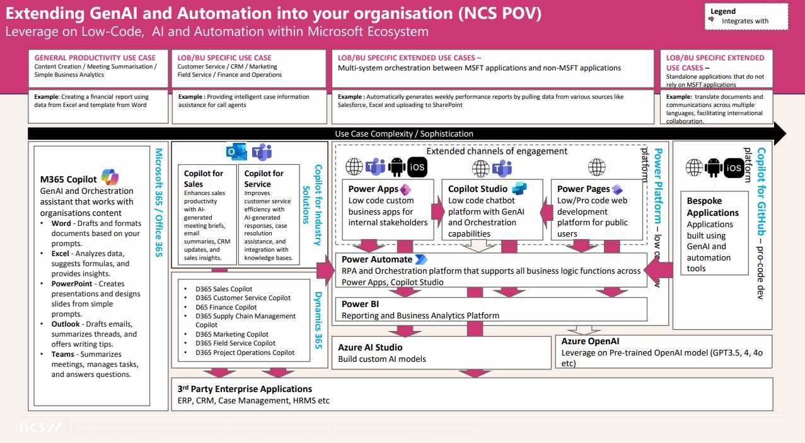
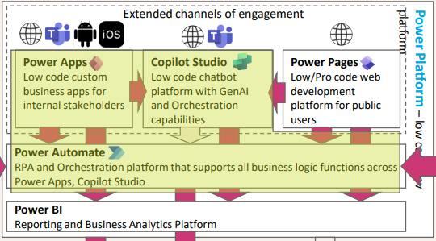
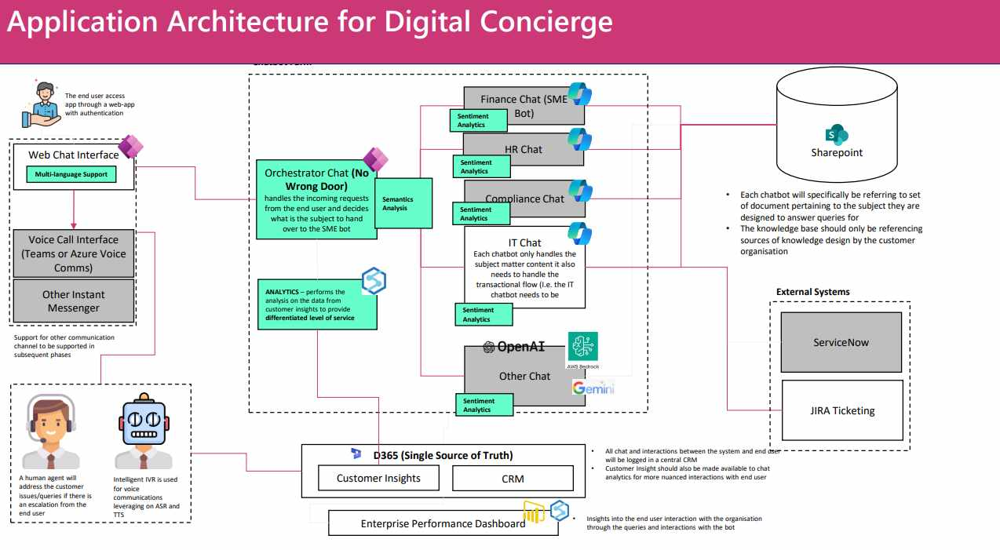
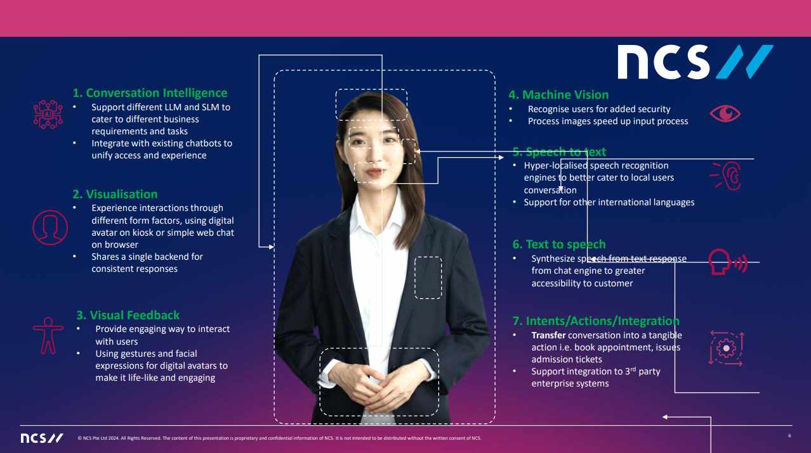

AI-Powered Business Applications Bootcamp Recap - Day 3¶
AI-Driven Digital Concierge¶
Speaker¶
- Andros Lee – Lead Solutions Architect, NCS Pte. Ltd.
A Microsoft Customers' AI Transformation Journey¶
Needs¶
“I need to reduce the cost of my operations while remaining competitive.”
-
Concerns: “Can we still be innovative while being efficient?”
-
Hopes: “I want to boost productivity for my employees.”
-
Microsoft’s NCS Values:
-
Identify key personas.
-
Establish areas where Copilot can provide benefits.
-
Considerations¶
“I think AI and automation can help my organization. How do I get started, and what should I consider?”
-
Concerns: “How do I prepare my company’s data, security, and systems to be AI-ready?”
-
Hopes: “I want to enable my company for an AI future and avoid pitfalls.”
-
Microsoft’s NCS Values:
-
Review the current security posture.
-
Develop an implementation and change management strategy.
-
Adoption¶
“I’m ready to turn on Copilot now. How do I maximize its utility?”
-
Concerns: “How do I optimize licenses while ensuring employees fully utilize Copilot’s potential?”
-
Hopes: “I want my organization to gain maximum benefits from AI.”
-
Microsoft’s NCS Values:
-
Organize workshop sessions.
-
Release FAQ guides showcasing diverse Copilot use cases.
-
Extension¶
“We’ve implemented Copilot successfully, but now I want to target individual needs.”
-
Concerns: “What role-specific Copilots can I deploy, and what systems are required?”
-
Hopes: “I want Copilot to empower all Lines of Business (LoBs).”
-
Microsoft’s NCS Values:
-
Integrate role-specific Copilots into workflows.
-
Engage subject matter experts for knowledge transfer.
-
Transformation¶
“My current systems are outdated, and my data is scattered.”
-
Concerns: “How can I modernize my enterprise systems and consolidate data?”
-
Hopes: “I want to future-proof my business.”
-
Microsoft’s NCS Values:
-
Modernize legacy applications and databases.
-
Embed automation and GenAI into business applications.
-
Breakdown of AI and Automation in the Microsoft Ecosystem¶
Microsoft 365¶
- M365 Copilot: A GenAI and Orchestration Assistant that enhances productivity across Word, Excel, PowerPoint, Outlook, and Teams.
Copilot for Industry Solutions¶
-
Copilot for Sales: Generate meeting briefs, email summaries, CRM updates, and sales insights.
-
Copilot for Service: Optimize customer service with AI-driven responses, case resolution, and knowledge base integration.
Dynamics 365 Copilots¶
-
Sales
-
Customer Service
-
Finance
-
Supply Chain Management
-
Marketing
-
Field Service
-
Project Operations
Unified Channels of Engagement¶
-
Power Apps: Develop low-code business apps.
-
Power Pages: Create low/pro-code web platforms.
-
Copilot Studio: Build chatbots with GenAI and orchestration.
-
Power Automate: Handle RPA and business logic automation.
-
Power BI: Leverage analytics and reporting.
-
Azure AI Studio: Build custom AI models.
-
Azure OpenAI: Utilize pre-trained models (e.g., GPT 3.5, 4, etc.).
Copilot for GitHub¶
- Bespoke Applications: Create custom solutions with GenAI and automation tools.
Highlighting the Capabilities of a Digital Concierge¶
I do my best to capture key notes, but these upcoming slides were packed;
Slides Presented
- Highlighting the above "Breakdown of AI and Automation in the Microsoft Ecosystem"

- Highlighting the components from Breakdown of AI and Automation" for the use of the Digital Concierge

- Highlighting the Application Architecture of a Digital Concierge

- Highlighting capabilities associated with a Digital Concierge function.

The Art of Crafting Effective Prompts for Your Power Platform AI Tools¶
Speaker¶
- Elaiza Benitez – Senior Cloud Advocate, Microsoft
"AI Won’t Replace You, But People Using AI Will."
What Makes Generative AI Different?¶
Traditional Rule-Based AI¶
-
Guided by predefined rules.
-
Rigid and inflexible.
-
Unable to create new things.
Generative AI¶
-
Utilizes large, diverse datasets to guide outputs.
-
Flexible and trainable with provided data.
-
Capable of creating and producing new content.
The Shift to Generative AI¶
Current Apps → Intelligent Apps:
-
Constrained Interactions → Natural Language Interactions
-
Fixed Data Sets → Data-Driven, Personalized Experiences
-
Costly Changes → Rapid Feature Delivery
Copilot in Power Apps¶
-
Formula Drafting: Describe desired functionality, and Copilot creates the formula for you.
-
Error Identification: Use Copilot to locate and fix errors, improving app quality.
-
Formula Explanation: Gain insights into formulas you didn’t write, with Copilot’s explanations.
Enhancing App End User Experience with Copilot¶
-
Built-In Copilot Studio: Customize Copilot for app-specific needs.
-
Copilot Controls: Enable data-focused chat functionalities.
-
Rich Text Editing Integration: Enhance app usability with integrated capabilities.
Unlocking Possibilities¶
Create Automations with Prompts¶
"Go from idea to automation using natural language."
Build Functional Websites¶
"Effortlessly develop internal portals and customer-facing websites."
Prompt Building with AI Builder¶
"Design, test, and embed GenAI prompts across products using a single interface."
Prompt Formulas¶
Basic Formula¶
- Task → Context → Expectations → Output
Example: "Create a product feedback summary based on recent customer reviews. Identify key themes, sentiment, and recurring praises or concerns. Format the summary to be concise and suitable for a marketing team meeting."
Expanded Formula¶
- Persona → Context → Task → Exemplar → Format → Tone
Example: "You are a senior product marketing manager tasked with evaluating feedback on the Contoso Widget. Create a summary based on customer reviews, identifying key themes, overall sentiment, and recurring praises or issues. Use clear and concise language suitable for a marketing meeting. Write in a confident yet friendly tone."
Prompt Crafting Best Practices¶
-
Order Matters: Large Language Models (LLMs) process prompts sequentially, so the order impacts the response. Test variations for optimal outcomes.
-
Be Mindful of Tokens:
-
AI breaks text into chunks (tokens), encompassing words or parts of words.
-
Token limits apply to both input and output, so concise prompts are critical.
-
-
Beware of Hallucinations:
-
AI may fabricate information when prompts are unclear or overly broad.
-
Use specific, fact-based prompts and verify outputs.
-
Essential Guidelines¶
-
Know the Limits: Copilot is in early stages; understand its constraints.
-
Trial and Error: Expect prompt revisions for the best results.
-
Copilot ≠ Autopilot: Craft thoughtful prompts for effective outcomes.
-
Fact-Check Outputs: Verify AI-generated content for accuracy and relevance.
Power Automate Copilot Formula¶
- When → Task → Format
Example: "At the end of each week, send me a summary of pending tasks in Planner. Format it as bullet points with task name, status, and due date in a Microsoft Teams message."
Copilot Studio Topic Formula¶
- Task → Context → Expectations
Example: "Allow a user to check a flight’s status by entering the flight number and date. Include 2 message variations and a speech option for each question."
Key Takeaways¶
-
Understand the Models: Each model serves specific purposes, with varying costs.
-
Balance Outcomes: Balance Generative AI’s creativity and grounded data insights.
-
Educate Prompts: Link data sources to improve accuracy and relevance.
-
Privacy Assured: Copilot and agents do not share your data or use it for model training.
-
Access Control: Copilot only interacts with data you are authorized to access.
Prompt Library: aka.ms/power-prompts
Deliver Hyper-Automation Enterprise-Wide with Power Platform¶
Speakers¶
-
Taiki Yoshida – Principal Program Manager
-
Scott Berry – Senior Technical Specialist
The Transformative Power of AI¶
-
Universal Interface: Seamlessly interact with systems.
-
Reasoning & Planning: Anticipate needs and optimize workflows.
-
Memory & Context: Leverage historical and real-time data to adapt intelligently.
"Copilot is the UI for AI Across Platforms"
-
Copilot
-
Copilot Devices
-
Copilot & AI Stack
Copilot and Agents Source Data From:
-
External Data Connectors
-
Microsoft Graph (Microsoft 365)
-
Microsoft Dataverse (Business Data)
-
Microsoft Fabric (Analytics)
Hyperautomation: A Holistic, End-to-End Approach¶
-
Origin: Identify processes ripe for modernization.
-
Building: Offer no-cliffs tools, enabling users to choose the right automation technology for their needs.
-
Scale: Empower users and organizations to automate at higher volumes.
-
Optimize: Drive continuous iteration and improvement.
How Copilot Transforms:
-
What you build.
-
How you build it.
Microsoft's Leadership in Hyperautomation
-
Robotic Process Automation (RPA) – New
-
Process Mining – New
-
Intelligent Document Processing
What Can Process Mining Do?¶
-
Uncover Inefficiencies: Gain x-ray visibility into processes, identifying bottlenecks and comparing them to effective workflows.
-
Identify Optimization Opportunities: Receive actionable insights for automating and deploying solutions.
-
Continually Monitor Performance: Ensure processes are optimized and track ongoing improvements.
Latest Announcements¶
1. AI Recorder (Public Preview)¶
-
A new multi-modal Copilot to create desktop automations.
-
Self-healing capabilities for UI automation using AI.
-
Automate from description with “Describe with Copilot.”
2. Generative Actions (Announced at Ignite)¶
- Add AI-powered steps directly to cloud flows for smarter, dynamic automations.
3. GPT-Infused Advanced Document Processing (Public Preview)¶
- Intelligently extract and process unstructured data using natural language.
4. Hosted Machines (General Availability)¶
-
Power Automate offers hosted machines for automation without infrastructure management.
-
Scale up or down within automations seamlessly.
5. Automation Center (Public Preview)¶
-
A Copilot-enhanced single pane of glass for managing all automations within an environment.
-
Promotes shift-left governance where makers contribute alongside Centers of Excellence (CoEs) and admins.
Governance + Security of Copilot Agents and Power Platform¶
Speakers¶
-
Ryan Jones – Partner Director of Product, Power Apps Scale
-
Shawn Nandi – Group Product Manager, Power Platform
-
Lianne Zelsman – Senior Product Manager
Agenda¶
-
Continuum of agents and low-code development.
-
Security measures.
-
Governance strategies.
-
Operational excellence.
-
Customer Spotlight: Microsoft Digital.
Spectrum of Agents¶
Simple → Advanced Capabilities¶
-
Retrieval (GA): Retrieve information, reason, summarize.
-
Task (GA): Execute actions, automate workflows.
-
Autonomous (Preview): Independently plan, orchestrate other agents, and learn dynamically.
Simple → Advanced Tools¶
-
Agent Builder: Designed for end users.
-
Copilot Studio: Tailored for makers.
-
Copilot Studio + Azure AI: For developers building advanced solutions.
Common Questions on Managed Environments¶
Chief Information Security Officer (CISO)¶
-
How can I protect data from external threats?
-
How do I prevent data exfiltration?
-
How can I stay compliant with regulations?
-
How can I assess risks effectively?
Chief Information Officer (CIO)¶
-
How can I ensure solutions adhere to guidelines?
-
How do I gain visibility into solution usage?
-
How can experts review agents before wide deployment?
-
How do I drive cost efficiency and maximize ROI?
Operations Director¶
-
How can complex solutions be deployed at enterprise scale?
-
How do I get timely alerts on critical solution failures?
Announcements¶
Managed Security (Secure)¶
Power Platform Admin Center:
- Security Hub offers advanced protection for AI-driven ecosystems.
Capabilities:
-
Security Posture Management: Guidance and assessments.
-
Threat Protection: Enforceable solution checker; Microsoft Sentinel integration.
-
Data Protection & Privacy:
-
Customer-managed encryption keys.
-
Data masking capabilities.
-
Microsoft Purview Data Map integration.
-
Advanced connector policies for environment groups.
-
Network isolation using v-net.
-
-
Identity & Access Management:
-
Conditional access for apps.
-
Privileged access management.
-
IP firewall and cookie binding.
-
-
Compliance:
-
Lockbox service.
-
Dataverse audit tools.
-
Managed Governance (Govern)¶
Power Platform Admin Center:
-
Agent Administration: A central hub for managing readiness, governance, and GenAI deployment at scale.
-
Environment Groups Management: Route makers to development environments and apply policies efficiently.
-
Licensing Management: Simplified licensing, capacity oversight, and compliance tracking.
Managed Operations (Operate)¶
Power Platform Admin Center:
-
Deployment Pipelines: Scale operations with approval-based production changes and source control integration.
-
Monitoring Tools: Real-time operational health metrics such as app open rates, time-to-interact, and full load times.
-
Observability: Integration with Azure App Insights for alerts, logs, and custom metrics.
-
Data Resilience: Extended backup retention, long-term recovery, and self-serve disaster recovery options.
Microsoft Digital¶
Who Are We?¶
Microsoft Digital (MS IT): Microsoft's first customer managing its vast tenant ecosystem.
Responsibilities:
-
Governance and security strategy.
-
Feature testing, enablement, and adoption plans.
-
User support initiatives.
-
Custom tooling to enhance product capabilities.
Current Environment¶
-
55K Environments across Developer, Sandbox, Dataverse for Teams, and Production tiers.
-
200K Apps and 400K Flows in active use.
-
25K Agents driving automated processes.
-
7K Pages developed for dynamic use.
Environment Groups¶
Personal Productivity - Developer Environments (Lowest Risk)
-
Self or Auto-Provisioned
-
Single owner, no sharing
-
Most 1st party connectors allowed; certain actions blocked
-
Inactivity-based lifecycle
Team Collaboration - Dataverse for Teams Environments
-
Self-Provisioned
-
Access tied to M365 Group label
-
Most 1st party connectors allowed; certain actions blocked
-
Inactivity-based lifecycle
Enterprise Development - Sandbox & Production Environments (Highest Risk)
-
Request process for provisioning
-
Additional management policies & compliance reviews
-
All 1st party connectors allowed by default, custom policies by request
-
Attestation-based lifecycle